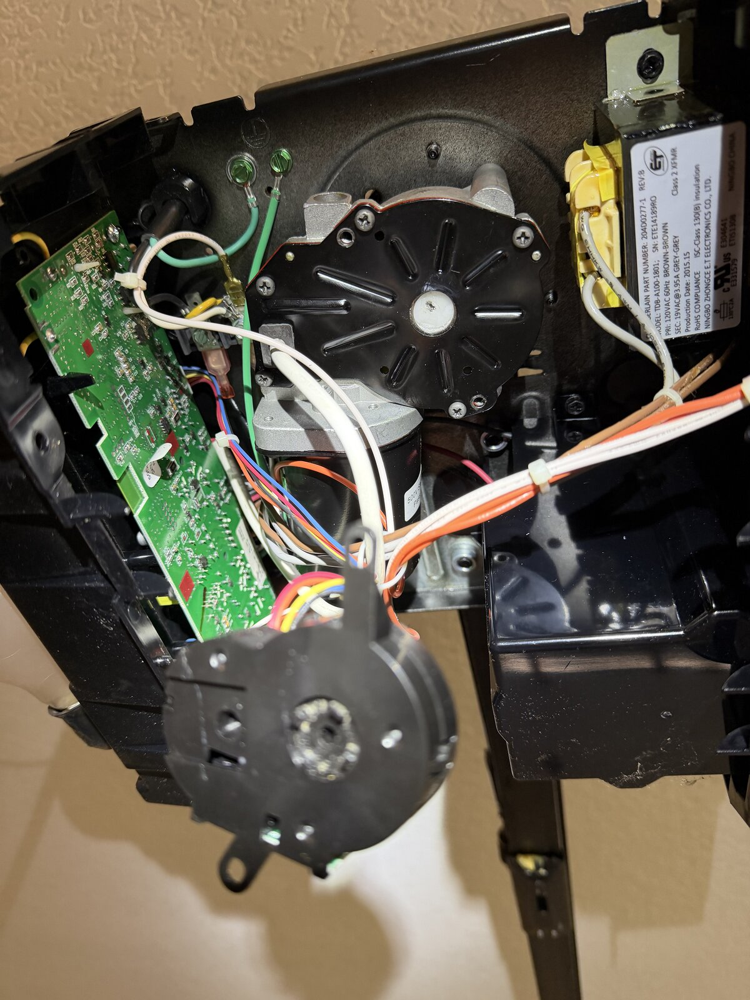
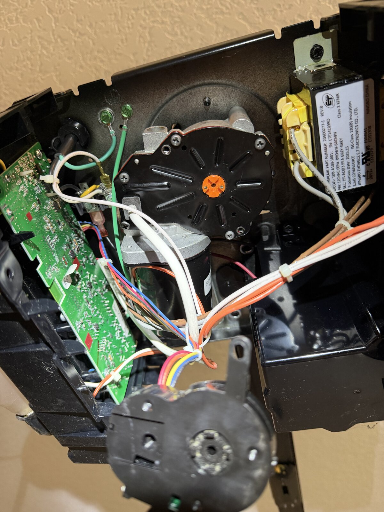

LiftMaster 8550W Error 1-5: 3D-Printable Motor Coupler
A printed replacement for the stripped white gear that drives the travel module. Model 8550W-267, FCC ID HBW1D8169-1, part number 001D8363.
Symptoms
- The opener moves the door a few inches, then stops and reverses.
- The travel (limit) buttons flash an error: 1 flash on the up arrow, 5 on the down arrow (code 1-5).
- With the opener disconnected, the door moves freely by hand. Tracks, rollers, and the spring are fine.
- Trying to reset the travel limits only lets the door move a few seconds (about 6 inches) at a time.
What was actually wrong
With the travel module removed, the problem was clear. The travel module was fine, but the white plastic gear on the end of the motor had its teeth stripped off.
That gear only spins the travel module, the sensor that tells the opener the motor is turning. With the gear stripped, the motor runs but the opener can't tell, so it shuts off after a few inches and throws 1-5.
As far as I could find, LiftMaster doesn't sell that gear on its own. The official fix is the whole motor and travel module kit (041-0236-000), which costs around $300, close to the price of a new opener. So I designed a replacement.


Files
| File | What it is |
|---|---|
| motor_coupler_short.scad | Parametric OpenSCAD source: the 4 mm tall version with anti-spin pin holes. Edit this to adjust the part for your unit. |
| motor_coupler_short_pins.stl | Ready-to-slice model exported from the SCAD file with the values shown below. |
| motor_coupler_short_pins_0.15mm_PETG_MK3S_8m.gcode | The G-code I printed with. It only works on a Prusa MK3S with a 0.4 mm nozzle and PETG (0.15 mm layers, 100% infill, about 8 minutes). For any other printer, slice the STL yourself. |
The part
It's a small disc that screws onto the end of the motor. Four slots on top take the four lugs on the travel module. A center M3 screw holds it down, and two pins keep it from spinning loose.
- Outside diameter: 14.5 mm, height: 4 mm
- 4 radial slots, 3.7 mm wide, for the travel module's 3 mm wide, 3 mm tall lugs (
slot_clear = 0.7) - Center hole for an M3 screw, with a 6.2 mm recess so the screw head sits level with the slot floor
- Two 2 mm pin holes, 180° apart, 5 mm from center, under the solid sections between the slots
My unit may not match yours. Measure your motor and travel module before printing, and adjust the values at the top of the SCAD file if needed.
Printing
- Material: PETG or nylon. PLA can soften in a hot garage.
- 100% infill
- Print with the slot side up
- If the fit is off, change
slot_clearin the SCAD file (higher is looser)
To make your own STL: open the .scad file in OpenSCAD (free), change any values you need, press F6 to render, then export the STL.
Installing
- Remove the light lens and cover, then remove the travel module.
- Remove what's left of the broken gear and clean out any bits of stripped plastic.
- Screw the new coupler onto the end of the motor with an M3 screw and blue threadlocker.
Adding the anti-spin pins
My first install spun loose with just the screw, because the motor runs in both directions. Two pins fixed it.
- With the coupler screwed on, use its pin holes as a drill guide and drill about 4 mm deep. The pins must go into the part that rotates with the motor, not the stationary motor housing, or you'll lock up the motor.
- Use pins about 8 mm long. 2 mm or 5/64" dowel or roll pins, the cut shank of a 5/64" drill bit, or a 14-gauge wire nail all work.
- Glue the pins in with epoxy (I used J-B Weld). Make sure they don't stick up above the top of the coupler.
- Let the epoxy fully cure before running the opener.
After installing
- Put the travel module back on and plug its harness in firmly.
- Reinstall the battery and the cover.
- Reset the up and down travel limits.
- Run the door several times and make sure it stops in the same place every time.
- Do the safety reverse test: lay a 2x4 flat on the floor under the door and make sure the door reverses when it touches it. Also check that the safety sensors (photo eyes) stop and reverse the door. If either test fails, don't use the opener.
Check the coupler after a couple of weeks for wear or play. It's cheap to print another one.
Disclaimer
Everything here, including the design files, STL, G-code, photos, and instructions, is provided "as is", without warranty of any kind, express or implied, including but not limited to warranties of merchantability, fitness for a particular purpose, safety, or non-infringement.
This is not professional advice, and the part has not been tested beyond my own opener. It may not fit, may fail, and may cause the opener or door to behave unsafely. Modifying your opener may void its warranty and any safety certification.
By using any of this material, you accept full responsibility for the results. In no event shall the author be liable for any injury, death, property damage, or other loss or claim arising from the use or misuse of this information or these files. If you're not comfortable working on a garage door opener, hire a qualified garage door technician.
This project is not affiliated with, endorsed by, or sponsored by The Chamberlain Group, LiftMaster, or Prusa Research. All product names, model numbers, and trademarks belong to their respective owners and are used only to identify compatible equipment.